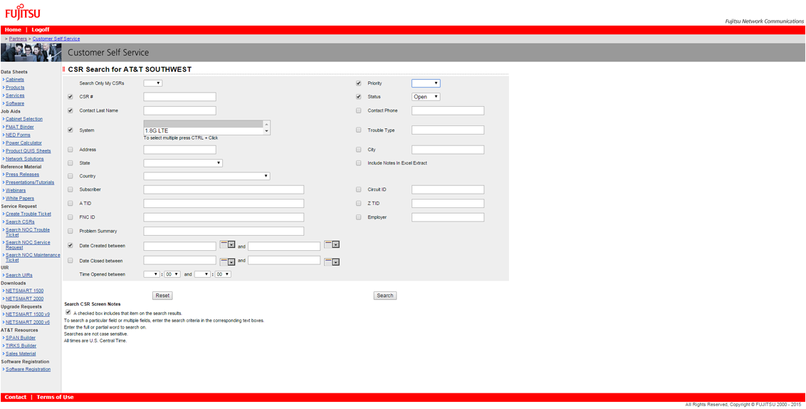
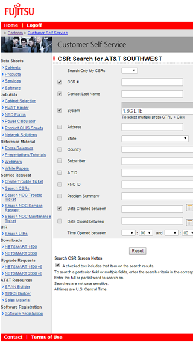
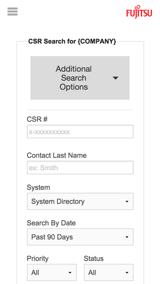

Case Study: Fujitsu
Goal:
Fujitsu’s extranet, specifically the Customer Service Request (CSR), is used by clients working with Fujitsu whenever they have a problem or need to check the status of an order. When I was brought onto the team they were in the process of remodeling the 15 year old website to better-fit Fujitsu Global design standards. My goal for the CSR section of the website was to figure out usability problems, come up with workarounds, and re-design it to fit said standards.
While, throughout the summer, I designed the entire service request subsection, we'll focus on the CSR in this case study.
So basically, I turned this:
Into this:

Process:
So, my first step was to actually analyze what was wrong with the old version. A few things stick out right away that are obvious; like the fact that it was a 15 year old website, and it didn’t follow many modern web standards. So following that, the team and I analyzed a bit more and concluded that the following were the most prominent problems, and came up with solutions.
Problem 1:
One major problem with the CSR page specifically was that there were too many data inputs in their forms. The majority of these inputs were barely, if ever used, but were essential in the event they were needed during a request. Out of the possible 21 inputs for this one form, only 6 were used on a regular basis.
The fix: The 6 most regularly used input options were put up front and center. I went ahead and added a multi-select option bar at the top so user can add more customization to their search if they’d like. This uses a good amount a jQuery, which was definitely a fun learning experience!
Problem 2:
A very small multi select system was implemented for choosing a specific system used by a company. You could scroll down the list, however by doing so you would often pass by 5 options at a time without seeing them. There was an option for choosing multiple systems as well, however more than one was rarely, if ever chosen.
The fix: A fuller, more traditional dropdown menu system was implemented.
Problem 3:
So obviously, being such an old website, it definitely wasn't responsive. It was accessible from a mobile phone, but did not scale to any particular size.
The fix: It was decide by the team to create all of the content built on top of the wonderful Zurb Foundation 5 framework.
Before:
After:
Problem 4:
Once a search was completed, a list of results would show with options to view details about each result. If one wanted to view the details, there would be no option to go back, thus starting the entire process over again.
The fix: A whole new fully responsive detail page template was added so that users could easily not only view the page and switch between results, but print only the information they needed, and add comments straight from the detail page.
Conclusion;
Now, for a 1500+ page website, this was only a small portion and a lot of the trial and error we as a team went through isn't fully expressed here. I was brought on in order to help the team develop a common template that can be used on the rest of the site. Throughout the summer, I learned a lot on usability, performing my own studies and figuring out best practices. I want to make clear that this was a team effort. I couldn't have done a lot of this without the guidance of the web development team from Fujitsu Network Communications.